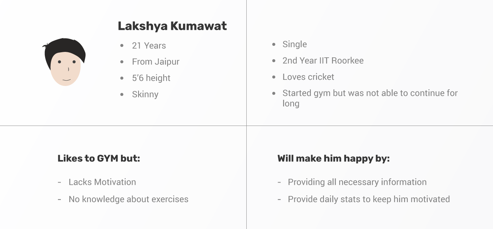
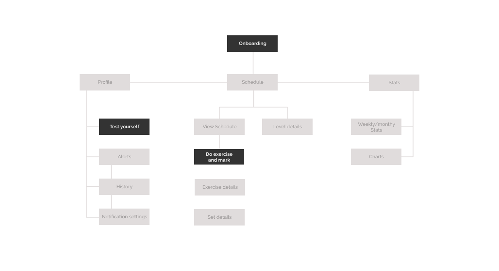
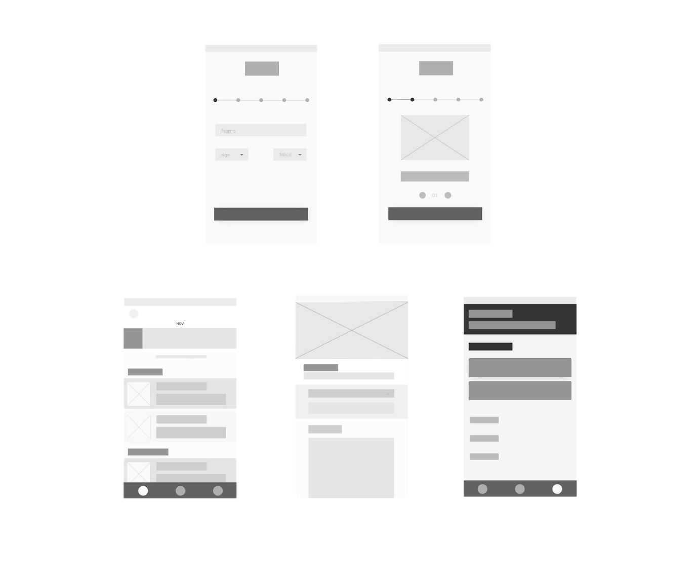
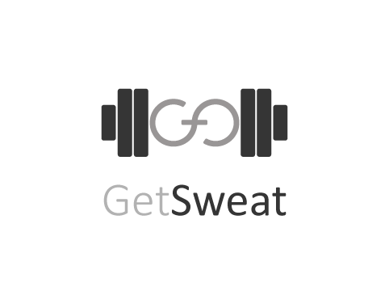
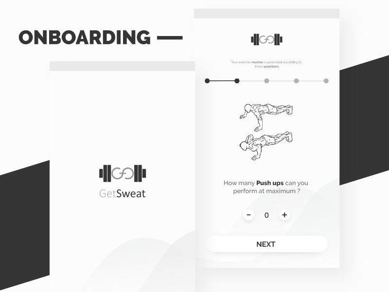
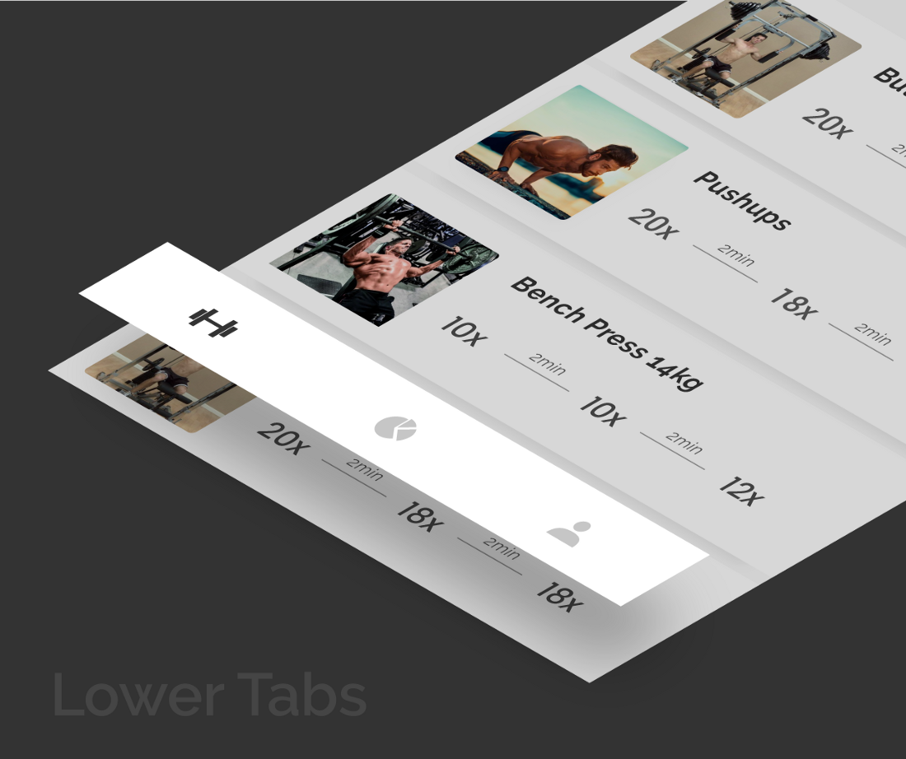

Talentbite | Intern at stockroom.io

Talentbite
Internship with Stockroom
Ever thought how laborious and frustrating task it is for developers to participate in different coding challenges to get a job and how much companies invest in hackathons every time to find such curated talent. Starting with my intern on 1st December 2017, Naren (C.E.O. of stockroom.io) introduced me to a completely new concept which can change the whole process of hiring in the corporates
- Roles: User research, Product Design, Prototyping
- Duration: 1 month
- Tools Used: Figma, Invision, Flock
Talentbite
Overiview
Talentbite is an online platform for the candidates in search of a job(actively or passively or open to job opportunities) and companies providing jobs. Helping companies find curated talent with less effort and candidates find a job by avoiding the hectic process of applying and participating in various hackathons.This platform will provide all essential information which are needed while recruitment procedure to the companies, But the USP of Talentbite is that it will also provide data of previous hackathons the candidate participated in with the exact problem statement and codescript the candidate attempted. Which will help the technical HR to properly judge the skills of the candidate.
My Role
I was assigned the responsibility to complete the landing page and two panels i.e. the company(HR) and developer panel. Where I was required to work from scratch starting from research to making mockups. I was required to work in the delhi office with Naren(CEO).
Tools Used
I decided to work on Figma, Figma provide all essentials features from sketch and also is a great application for collaborative working. It took me just a day to get familiar with the whole interface it is quite similar to that of XD and sketch.
Approach
We followed Agile mindset and Lean UX approach to reduce wastes and utilize resources properly moreover regular discussions, proper collaboration and iterations helps in getting better results in less time.
Research
After completely understanding the product and how it fits into the process, started with the research part. Naren and Soumya Ranjan Bishi (my mentor) were very much familiar with the market and users so they helped me with it due to time constraint.
User Personas
Deciding Goals
- To provide a platform for companies to find curated talent with less effort.
- To reduce effort put in by the candidates while applying for jobs.
How to achieve those goals
- Creating a platform where companies can view candidate profiles which holds all general information along with the codescripts of different questions attempted by the candidate in previous hackathons or challenges.
- Candidates can practice questions which will moreover improve their profile.
Competitor Analysis
There are many competitors in the market but there is none providing much similar featuresSome companies targeting same users are:
Hackerearth
Hackerearth has the same moto i.e. providing curated talent to the companies and they do this by organising hackathons for different companies. But there methodology of doing so is very much different from talentbite.Naukri
It focuses on the same problem but approaches it in a very different way. Where candidates search for a job profile and apply according to that.Hackerrank
Focused on learning rather than finding jobs.Designing the Landing Page
Making a user signup to your platform is the most important and difficult task to do and for this to happen an appropriate landing page is very essential.The design should guide the user to the desirable outcome and also provide all the required information. To increase conversions stats (like companies associated, testimonial etc.) to win a users trust is very much important.
Making the landing page visually appealing is also very essential. Knowing the fact that a good UI helps in increasing conversions I tried to design it with the latest UI trends.
Wireframes

Visual Design
- To help beginners know their abilities, limits and exercise according to it.
- To provide daily detailed schedule to the users.
- To make workout more engaging and interesting.
- To help them to know their daily progress in a better way.
Finding Solution
- The basic idea was to create an app that takes input from the user about their 1st day at gym and generates a proper schedule according to the data.
- Adding elements of gamification would make the experience more engaging and also help the user to monitor their progress.
Deciding Features
On the basis of the above personas and questions asked in interviews a number of features were brainstormed but I decided to keep a few primary features first and thereby, working towards designing a MVP.- Generate Schedule — Evaluating users strengths and limits according to the inputs given while onboarding was kept as the basic and backbone feature of the application.
- Daily Check — To ensure that the users follow their schedule, a daily check was required.
- Introducing Levels — Everyone faces a dip in motivation and being motivated all time is challenging especially in case of gymming. In order to solve this problem, I gamified the experience by introducing levels. A large goal can be achieved easily by splitting it into small targets or levels. Achieving these small targets would help users to quantify their success in terms of number of levels completed. Thus, this would increase the engagement of the users with the application and simultaneously, it would keep them motivated towards their daily workout sessions.
Information Architecture


Sketches



Wireframes

Brandings


Workout is all about discipline, regularity and power. Black is the color that represents these traits well.
A professional yet a bit less formal font was required to go in resonance with the whole essence of the application.
A professional yet a bit less formal font was required to go in resonance with the whole essence of the application.
Designes

Onboarding need to be easily understandable by the user and to ensure that, the whole process is divided into steps to make it pleasing and easier. At every step the user need to give some quantitative input using the plus minus buttons. Slider was not used as the upper limit is not defined.

Lower navigation is used instead of the conventional hamburger menu, hamburger menu hides the main navigation from the user and results in bad UX.
Tabs in the lower navigation were decided according to their hierarchical importance, remembering that should consists of different domains, so that user might not need to navigate frequently. GetSweat has three tabs exercises, stats and profile.

This tab let user have a proper view of their daily schedule with every proper detail of exercise required. The schedule can be accessed using day tabs above and user can also have a detailed view of the exercise i.e. a proper tutorial video, images, sets according to level and benefits associated with the workout.
User can mark the exercise as done by swiping left on the card.
User can mark the exercise as done by swiping left on the card.
Stats
Displaying stats is a very important factor to keep user motivation. Here users can view there workout history and chart to show to what extent the routine was followed.Profile

Profile page consists of some basic alerts regarding schedule and information about days required for level up. Test and Analysis feature is also accessed through this tab only where user can try a few basic exercises and know there progress till far. Some basic setting like notifications, view history and log out are also accessed by this tab.
That’s all folks
This project was a good learning experience for me. It helped me to improve my UX research skills by following a user-centered design approach. Designing a black and white UI and still ensuring that It looks good was definitely an exciting challenge for me.


 kunalsatpal1@gmail.com
kunalsatpal1@gmail.com